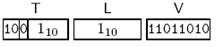
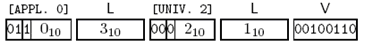

如果一个类型的Tag是隐式（IMPLICIT）的（或者在模块定义中声明了IMPLICIT TAGS或者AUTOMATIC TAGS），则只有出现在关键字IMPLICIT左侧的Tag才会被编码。
如定义：
v [1] IMPLICIT INTEGER ::= -38
的编码为：
 http://hiphotos.baidu.com/hxzon/pic/item/809caaafbab7bf8a7dd92a3f.jpg
Figure 3-21 IMPLICIT TAG编码示例
如果一个类型的Tag是显式（EXPLICIT）的（或者在模块定义中声明了EXPLICIT TAGS），则要以constructed方式编码三元组系列。
如定义：
v [APPLICATION 0] EXPLICIT INTEGER ::= 38
的编码为：
 http://hiphotos.baidu.com/hxzon/pic/item/7333af01776272401c95833f.jpg
Figure 3-22 EXPLICIT TAG编码示例
注意第一个Tag是APPLICTION、constructed方式，Length是后续八位组的长度。
http://wmfbravo.blog.163.com/blog/static/2117582200811116107201/ ASN.1探索 － 1 简介 《ASN.1 Communication between Heterogeneous Systems》和《ASN.1 Complete》
http://wmfbravo.blog.163.com/blog/static/21175822008111161153912/ ASN.1探索 － 2 基础知识（1）
http://wmfbravo.blog.163.com/blog/static/21175822008111161438378/ ASN.1探索 － 2 基础知识（2） 2.8基本类型 《ASN.1 Communication between Heterogeneous Systems》
http://wmfbravo.blog.163.com/blog/static/21175822008111162147694/ ASN.1探索 － 2 基础知识（3） 2.11子类型约束
http://wmfbravo.blog.163.com/blog/static/2117582200811116231472/ ASN.1探索 － 3 编码规则与传输语法（1 - BER）
http://wmfbravo.blog.163.com/blog/static/21175822008111162436300/ ASN.1探索 － 3 编码规则与传输语法（3 - PER）
ASN.1 相关网站，如果您有更多信息，也请告知。
1) ASN.1 Home
在这个网站包含丰富的信息，各位高手可以按图索骥。
http://asn1.elibel.tm.fr/en/index.htm
2) ASN.1协会
http://www.asn1.org/index.htm
3) 开源的ASN.1编译器ASN1C
支持2002版本的BER、PER和2001版本的XER编码规则，目标语言为C。
http://lionet.info/asn1c/
4) ITU-T的ASN.1项目
http://www.itu.int/ITU-T/asn1/index.html
5) 专业公司OSS Nokalva
http://www.oss.com/
6) 专业公司uniGone
http://www.unigone.com/en
7) 专业公司Object System
http://www.obj-sys.com/
8) 开源项目SNACC
只支持1997版本以前标准，项目已经停止。
http://directory.fsf.org/snacc.html
9) 开源项目ASN.1 Tool
http://iiiasn1.sourceforge.net/
10) 开源项目Better ASN.1
http://sourceforge.net/docman/display_doc.php?docid=19875&group_id=90342
11) Eclipse的ASN.1编辑器插件
http://sourceforge.net/projects/asneditor/
12) C#编写的ASN.1编辑器
http://www.codeproject.com/csharp/Asn1Editor.asp
原文：http://wmfbravo.blog.163.com/blog/static/211758220081111672561/